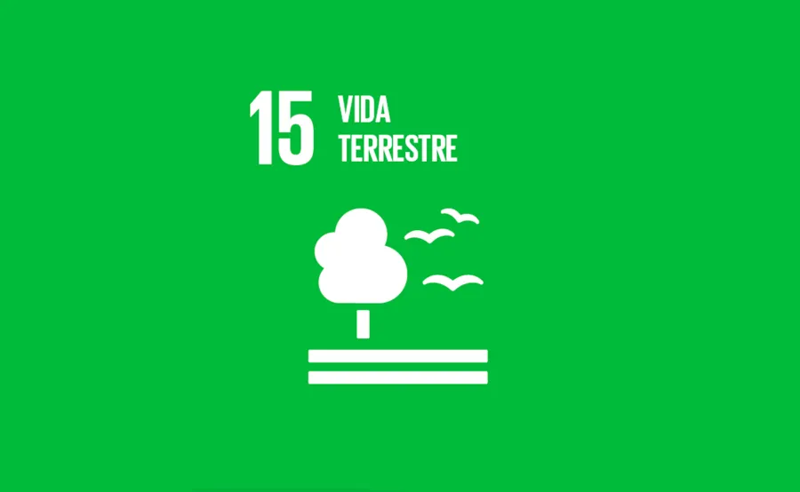

VIDA SOBRE A TERRA
Vida Terrestre: a indústria da construção e suas cadeias de suprimentos também impactam o uso de materiais de origem responsável, como a madeira. As ferramentas de certificação de construção ecológica reconhecem a necessidade de reduzir o uso da água, o valor da biodiversidade e a necessidade de garantir sua proteção e incorporá-la ao espaço durante e após a construção – minimizando danos e projetando formas de melhorar a biodiversidade, como paisagismo com flora local.

É importante preservarmos o meio anbiente em que vivemos pensando nas espécies e a vasta biodiversidade que encontramos nela